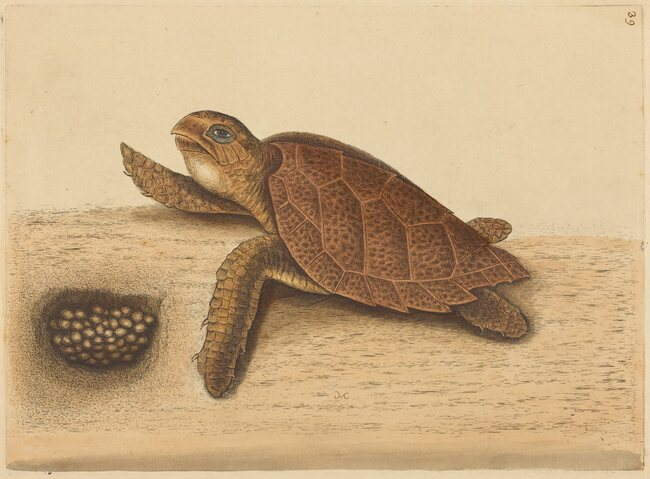
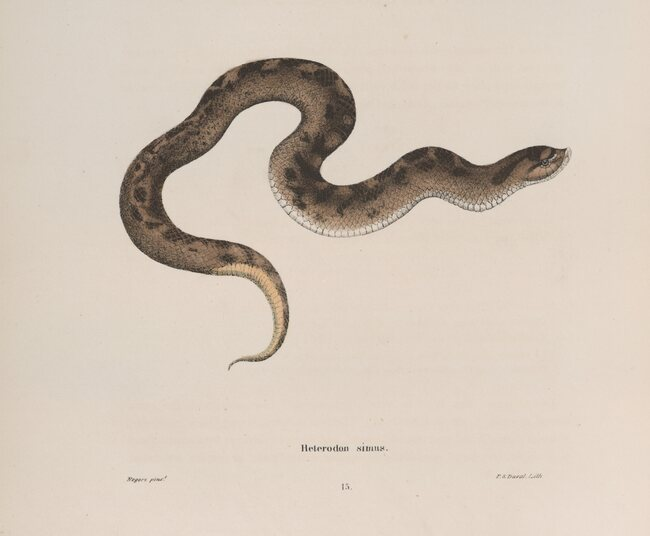

Federally listed reptiles of Alabama
Alabama has 10 reptiles on the federal list of endangered and threatened species: 4 listed as endangered and 6 as threatened. Another 4 are on the list only because they are hard to tell from species in danger. Another 2 have been proposed for listing. Each entry says what the reptile looks like, where it lives, why it is at risk, and where to read more.
The strip beside a sea turtle shows the months it nests on Alabama beaches. The outlined square is this month.
The reptiles
Listed, and found in Alabama
-
Alabama red-bellied turtle
Pseudemys alabamensis
A large plant-eating turtle of the Mobile-Tensaw Delta.
-
Black pinesnake
Pituophis melanoleucus lodingi
A large black constrictor of the longleaf pine country of southwest Alabama.
-
 Photo unavailable
Photo unavailable
Eastern indigo snake
Drymarchon couperi
A large, glossy, blue-black snake of the sandhills that winters in gopher tortoise burrows.
-
Flattened musk turtle
Sternotherus depressus
A small turtle with a flattened shell, found only in the upper Black Warrior River system.
-
 Photo unavailable
Photo unavailable
Gopher tortoise
Gopherus polyphemus
A burrowing land turtle whose long tunnels shelter hundreds of other animals.
-
 Photo unavailable
Photo unavailable
Green sea turtle
Chelonia mydas
A large sea turtle with a smooth, heart-shaped shell, and one of three kinds that nest on Alabama's beaches.
JFMAMJJASOND -

Drawing unavailableHawksbill sea turtle
Eretmochelys imbricata
A reef turtle with a hawk-like beak, hunted for its shell, and a rare stray in Alabama's waters.
-
 Photo unavailable
Photo unavailable
Kemp's ridley sea turtle
Lepidochelys kempii
The smallest sea turtle, a crab-eater of shallow Gulf waters that sometimes nests in Alabama.
JFMAMJJASOND -
 Photo unavailable
Photo unavailable
Leatherback sea turtle
Dermochelys coriacea
The largest of all turtles, a deep diver of the open sea that passes through the Gulf off Alabama.
-
 Photo unavailable
Photo unavailable
Loggerhead sea turtle
Caretta caretta
The sea turtle Alabama sees most, and the only one that nests here every year.
JFMAMJJASOND
No reptiles match these filters.
Listed only for their likeness to another species
Not in danger themselves. Each is on the list because it is hard to tell from a species that is, and the listing limits collecting or trade.
-
Alabama map turtle
Graptemys pulchra
A river turtle named for the fine, map-like lines on its shell, listed because it is hard to tell from a rarer cousin.
-
American alligator
Alligator mississippiensis
No longer in danger, and kept on the federal list only because its hide looks like those of crocodilians that are.
-
Barbour's map turtle
Graptemys barbouri
A big-headed map turtle of the rivers of southeast Alabama, listed because it is hard to tell from a rarer cousin.
-
Escambia map turtle
Graptemys ernsti
A large map turtle of the rivers of south Alabama, listed because it is hard to tell from a rarer cousin.
Proposed for listing
Not protected under the Endangered Species Act unless a final rule lists it.
-
 Photo unavailable
Photo unavailable
Alligator snapping turtle
Macrochelys temminckii
The largest freshwater turtle in North America, proposed for listing as threatened.
-

Drawing unavailableSouthern hognose snake
Heterodon simus
A small, stout snake with an upturned snout, proposed for listing as threatened, and not recorded in Alabama since 1975.